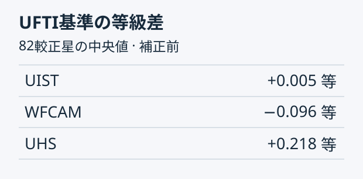
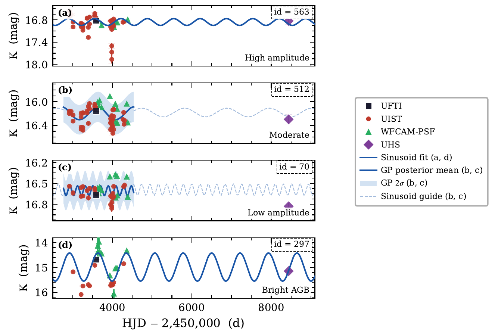
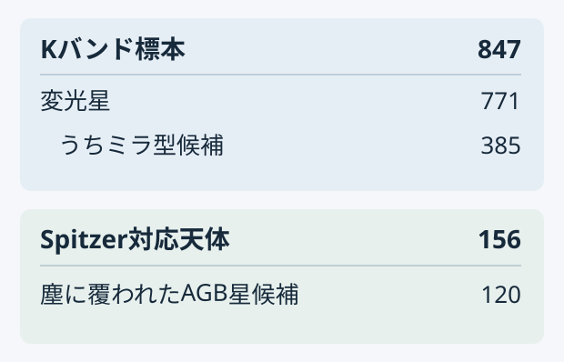

四つのデータセットを同じ尺度に
Abdollahiらは英国赤外線望遠鏡（UKIRT）の四つのデータセットをまとめた。波長約2.2 μmの近赤外線 K バンドなら、比較的低温の漸近巨星分枝（AGB）の星を追いやすい。星が密集する中心部では、隣の星の光が混ざる。研究チームは画像中で点光源がどのように広がるかをモデル化して測光し、少なくとも二つのデータセットで検出された星を残した。対象は中心の約12平方分にある847天体。2003年10月から2018年11月までの15.11年で、21,085点の測光値が集まった。
比較的明るく、測光のばらつきが小さい82天体を基準星に選び、2MASS/Vega系に較正済みのUFTI測光との等級差の中央値を求めた。データセット間のずれは最大約0.22等あり、それぞれに一定量の補正を施した。補正前のまま異なる年の値をつなぐと、装置や処理の違いが長期変光に見えることがある。


図を選ぶと原寸画像を開けます。
振幅から候補を選び、周期は次の解析へ
各星の K 等級の標準偏差が0.10等を超えた771天体を変光星とした。このうち、測れた最も明るい時と暗い時の差が1.0等以上の385天体がミラ型候補だ。測光点は星によって4～63点と幅があり、観測の間に極大や極小が来れば振幅を小さく見積もる。少数の測光点や一つだけ外れた値にも注意が要る。ここでの分類は観測された振幅を使ったもので、ミラ型の周期の確定は今後の解析に委ねられている。


図を選ぶと原寸画像を開けます。
赤外線の色で、塵に覆われた候補を探す
Spitzer宇宙望遠鏡の3.6 μm測光と対応した156天体のうち、平均 K 等級と3.6 μm等級の差が0.5等を超えた120天体を、塵に覆われたAGB星の候補とした。星の周りの塵は短い波長の光を吸収し、より長い波長で放射するため、この色は手がかりになる。156天体は二つの観測で対応が取れた部分標本であり、120という数からM33全体における塵に覆われた星の割合を推定することはできない。


図を選ぶと原寸画像を開けます。
明るさの尺度がそろった時系列は、次に周期を測り、周期と光度の関係やこの銀河の星形成史を調べるための土台になる。